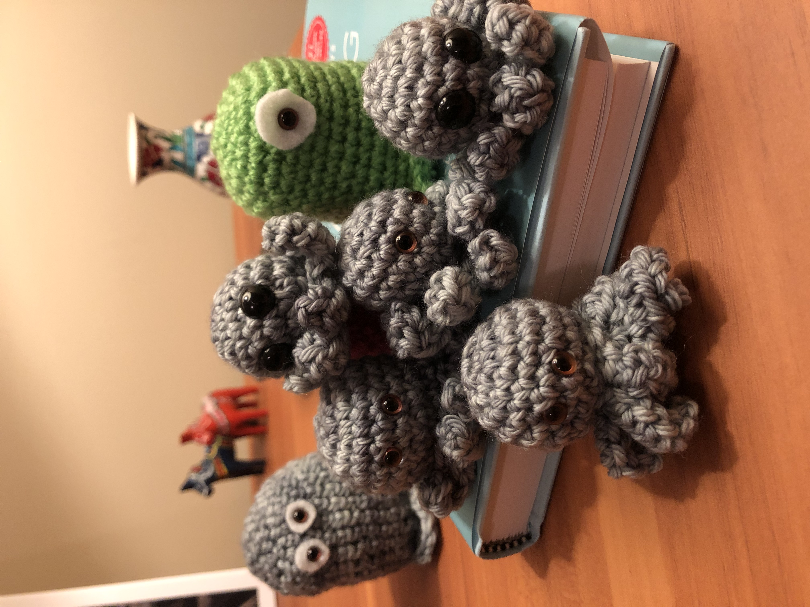

7 Nov 2022
For a laugh:
a collection of early crochet creations

exploring in and out of doors
Don't panic.


items = { "chair" => 100, "book" => 14 }
hash = {}
items.each do |name, price|
hash[name] = price
end
p hash
# {"chair"=>100, "book"=>14}

For a laugh:
a collection of early crochet creations
Why coding and not something else?
Computers may be as close as we get to magic in the real world: we type incantations into a machine, and — if the incantations are right — the machine does our bidding. To perform such magic, computer witches and wizards rely not only on words, but also on wands, potions, and an ancient tome or two. Taken together, these tricks of the trade are known as software development: computer programming, plus tools like command lines, text editors, and version control.